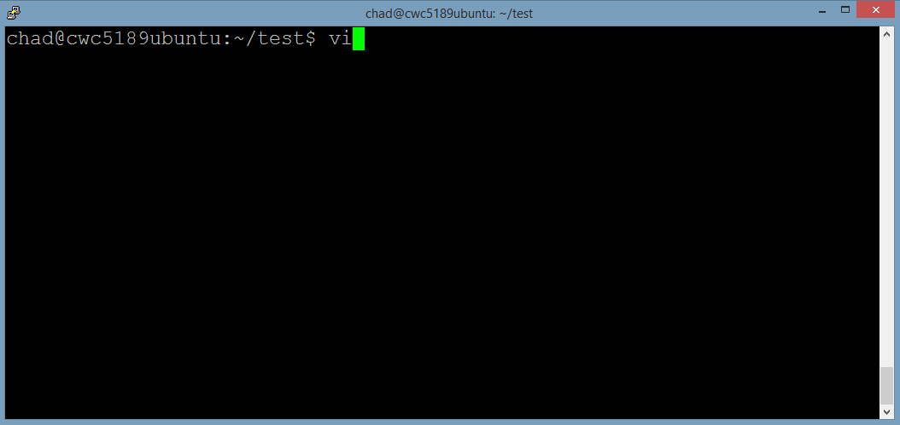
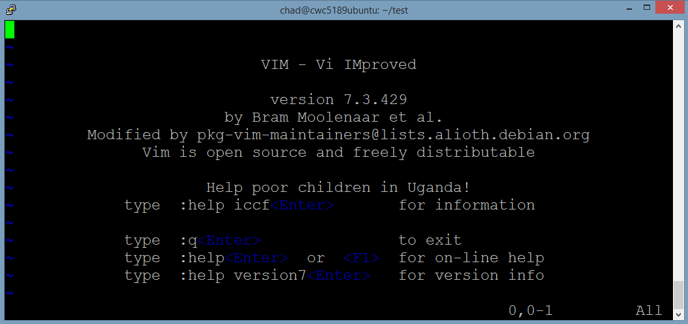
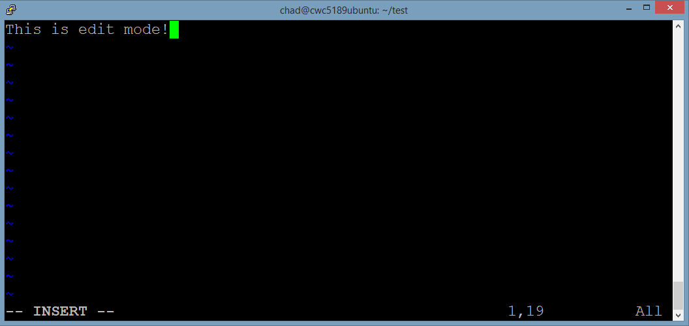
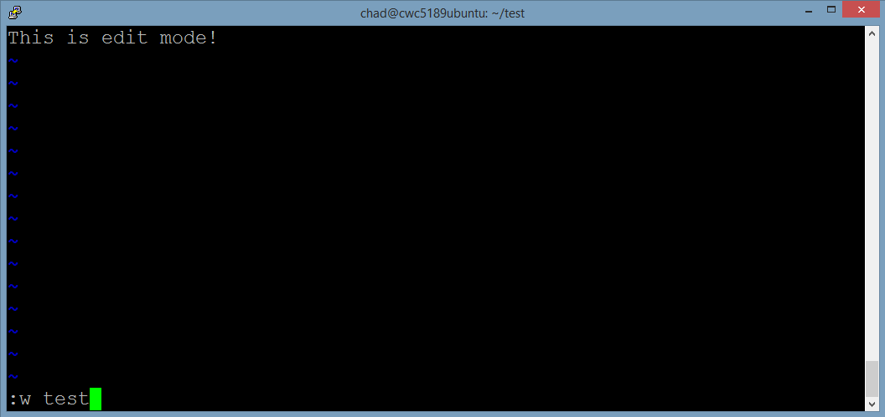
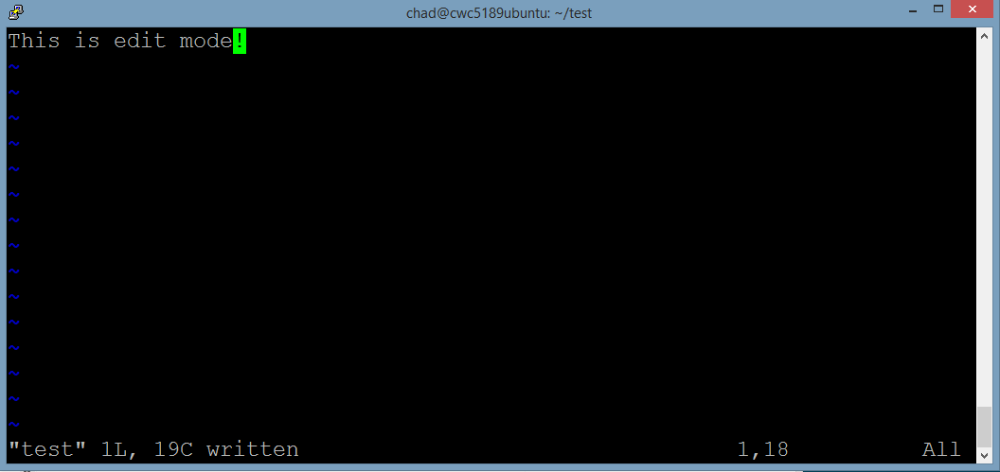
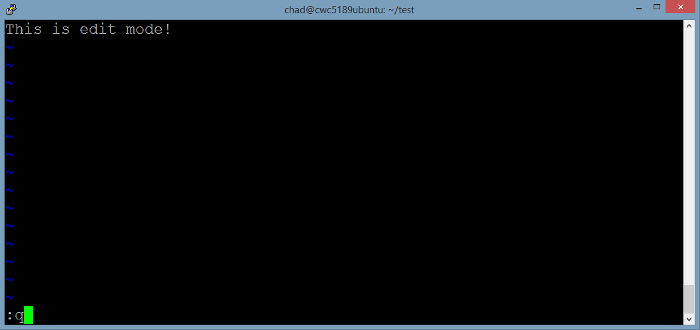
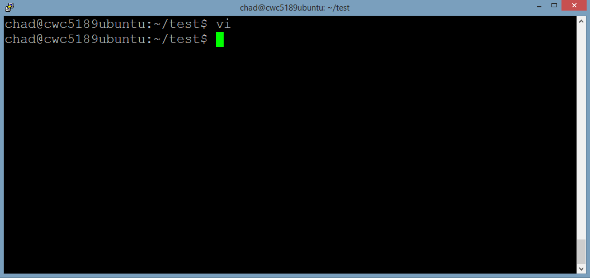
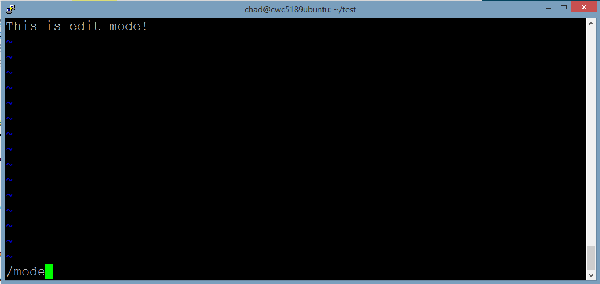
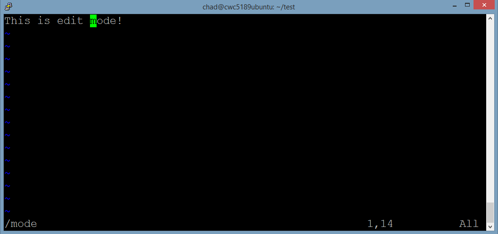
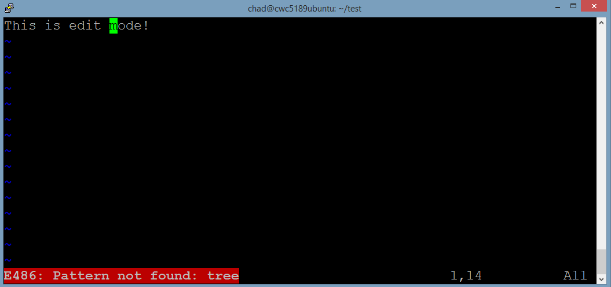

Although we will be focusing on the vi text editing tool, we wanted to list some other alternatives.
We will be covering vi mainly because it will be available on nearly any Unix system you use and is a good baseline to know.
To get started with vi, simply enter the vi command at the terminal:


As you can see from the picture above vi has some nice landing text to get you started, but you can disregard it for now.
The key thing to remember is that vi has two modes: command, and insert. When you are in command mode, everything you type on the keyboard gets interpreted by vi as a command. When you are in edit mode, most everything you type on the keyboard gets interpreted as characters.
When you are in insert mode, you can switch to command mode by pressing the Esc key on your keyboard (this is often at the left and upper portion of your keyboard).
If you are in command mode, you can simply type i on your keyboard to enter edit mode
You can tell if you are in edit mode if you see the

Go ahead and press the i key and when you see the -- INSERT -- show up on the bottom left, enter any text you want!
The difficult thing for users coming from a GUI based system is navigating around vi.
You can move your green cursor with the arrow keys. Using the mouse to try and click a location will not work
Also what you see on the screen is merely a portion of the file, you can use the Page Up and Page Down keys on your keyboard to move up or down in the file you're in respectively. You can also go up or down with the cursor but it may take a long time!
There are hundreds of vi commands; and it would take a fifteen week course to cover all the ways that you can use the vi editor to edit files, run commands, and do an astounding amount of things.
We will be covering three main interactions: writing a file, quitting vi, and searching a file.
NOTE: All commands in vi are case-sensitive, just like in Unix!
Once you are ready to save your file, make sure you are in command mode. (Press the ESC key if you are in edit mode) And enter:
:w test
When you are in command mode you should see the text you're entering in the bottom right. Upon pressing enter to submit it, it will save the text to a new file named test.

NOTE: There may be a prompt to add ! to your :w command to overwrite the file. (Your command would now be ":w! test") The ! is an override marker to force the execution of the command.

Upon saving it, you will see the file has been written result in the bottom left
For quitting vi you need to be in command mode again, and enter in the command:
:q

NOTE: You may get the prompt to add the override ! if you have unsaved changes to your file in the editor.

Upon entering the quit command, you will be brought back to the Unix command line!
This section is optional to everyday usage of vi, but really showcases the power of having an advanced knowledge of vi
In vi there are two directions to search in: forward of your cursor position and backwards of it.
To search forward use the command (replacing the word string with whatever you want to search for):
/string

In my example I search for the string 'mode'. And upon finding the string, my cursor is placed where the occurance of it begins.

If your string is not found anywhere in the document, then vi will print out an error in the bottom left.

To search backwards, just do the same thing but with the ? instead of a /
NOTE: If your search hits the end or beginning of the document depending on which kind of search you did, it will continue searching from the opposite end until it hits your current cursor position.